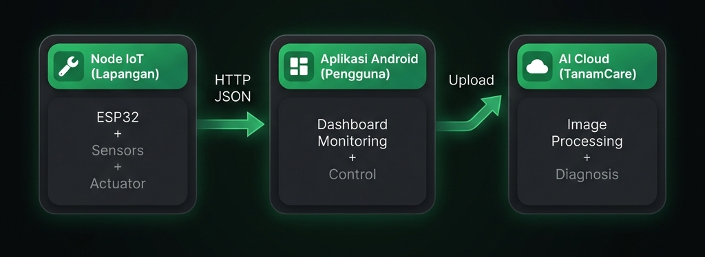
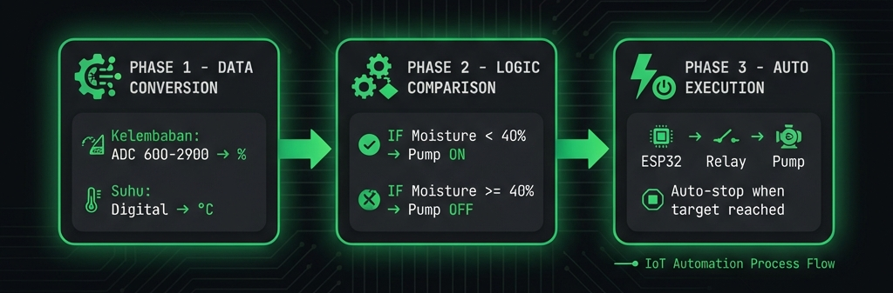

85% Masyarakat Kota
Belum Mampu Memproduksi Makanannya Sendiri4 Masalah Urban Farmers
Waktu Terbatas
Tanaman layu karena lupa disiram
Tanpa Data
Perawatan berdasarkan "kira-kira"
Setup Rumit
Harus input IP manual, error-prone
Mahal
Solusi komersial Rp 500rb - 2jt
Ini bukan masalah Anda saja — ini masalah JUTAAN urban farmers Indonesia.

"Menanam tumbuhan, Menyiram harapan, Menumbuhkan masa depan"
Kami mahasiswa sistem informasi yang juga urban farmers.
Kami PERNAH di posisi Anda — dari frustrasi itu, kami BERTINDAK.
3 Fitur Utama
Real-Time Monitoring
Pantau kelembaban & suhu dari HP
→ Tidak perlu nebak-nebakAuto-Watering
Siram otomatis saat tanah kering
→ Tidak perlu takut lupaPlug & Play
Nyalakan → Terhubung 2 detik
→ Zero configurationYang Membuat Berbeda
TanamCare AI
Foto daun → Diagnosis penyakit + rekomendasi
Edge Computing
Berjalan otonom meski HP mati / WiFi putus
Data-Driven
Keputusan berdasarkan %, °C — bukan feeling
Modular
Jalur siap untuk upgrade sensor NPK
3 Domain Terintegrasi

Total Biaya Komponen
Tech Stack
Android App
Kotlin Native + NsdManager
Auto-discovery protocolESP32
Web Server + REST API
Lightweight & efficientData Format
JSON
Simpel & universalClosed-Loop System

Zero-Configuration NSD
Tidak perlu input IP manual → Zero human error
Semua Test LULUS ✓
Sistem SIAP PAKAI ✓
Tervalidasi Akademis & Teknis
Pencapaian Validasi
Meraih gelar Juara Kategori APSI di GEMASI — analisis & perancangan sistem tervalidasi panel ahli
Progress Software
Aplikasi mobile berjalan lancar, e-commerce Tanami selesai (Laravel + SMBD)
Progress Hardware
Prototipe (sensor, microcontroller, relay pompa) sudah lolos uji fungsionalitas dasar
Target Pasar & Rencana Jangka Pendek
Pekerja & Mahasiswa
Di area perkotaan, hobi merawat tanaman hias namun keterbatasan waktu
Urban Farmers Pemula
Komunitas hidroponik skala rumahan yang butuh otomasi untuk efisiensi
Timeline: 3-6 Bulan ke depan
Ruang Bertumbuh Bersama ABP
Manajemen SDM & Waktu
Tim berskala besar dengan mayoritas part-time (kuliah). Butuh mentoring Agile/Scrum agar alur kerja progresif.
Pendanaan Riset Hardware
Butuh komponen fisik (sensor, ESP32, pompa) dan biaya server/cloud. Keterbatasan modal untuk scale-up prototipe.
Validasi Model Bisnis
Butuh arahan mentor: one-time purchase, bundling e-commerce, atau subscription aplikasi?
Bersama ABP, kami siap bertumbuh menjadi bisnis yang sustainable
TANAMI vs Kompetitor
Harga 1/10, fitur LEBIH LENGKAP
4 Alasan Memilih TANAMI
Untuk Pemula
Dirancang untuk yang baru memulai urban farming
Zero-Config
Plug & Play dalam 2 detik
AI-Powered
TanamCare untuk diagnosis penyakit
Affordable
< Rp 500rb, terjangkau semua kalangan
Pengembangan Selanjutnya
Cloud
- Cloud Database
- Analytics
- Push Notifications
Scale
- MQTT Protocol
- Sensor NPK
- Multi-node
Expand
- DIY Kit
- Enterprise
- Edu Platform
"Menanam tumbuhan, Menyiram harapan, Menumbuhkan masa depan"